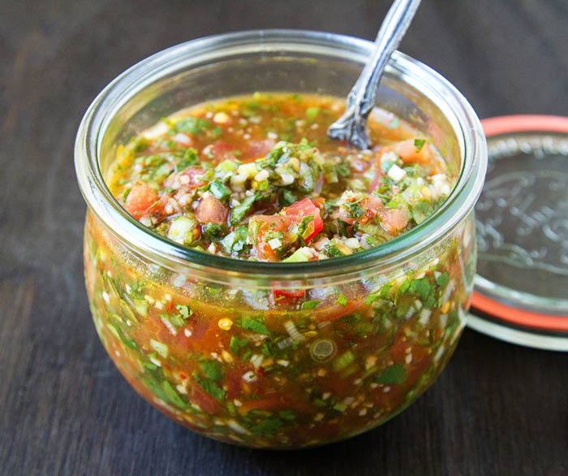

Pebre

Chilean taste is so unique, so we bring PEBRE!
This pebre recipe is a South American condiment much like a salsa, made with tomato, chilies, onion, cilantro, garlic, oil and more, easy to make!
So, we learned that it's easy to make. But what do we actually need?
- Oil, Vinegar and Water. Use 1/4 cup olive oil or a neutral oil with 1/4 cup water and 2 tablespoons white wine vinegar. Red wine vinegar is good, too.
- Tomato
- Peppers. Use 5 Aji Chili Peppers chopped (we used Aji Amarillos) - or use jalapeno peppers or serrano peppers
- Onion. 1/2 small to medium-sized onion
- Scallions. Use 1/4 cup of the white part and 1 inch of the green parts
- Garlic. 4 cloves garlic, smashed to release their flavors
- Cilantro. Use 1/2 to 1 cup chopped cilantro, depending on your preference
- Salt and Pepper. Use salt and pepper to your personal taste
Steps to make this awesome thing are?
Whisk. First, whisk together the oil, water, vinegar and smashed garlic in a large bowl until the mixture thickens up a bit.
The Vegetables. Next, finely chop up your tomato, peppers, onion, scallions and cilantro.
Combine. Toss the chopped onion, tomato, and vegetables into the oil mixture and mix to combine.
Season and Refrigerate. Season with salt and pepper to your personal tastes, then transfer the mixture to a bowl. Cover and refrigerate to let the flavors mingle.
Boom! Done! Pebre in the house! What do you think? So good, isn't it? I love pebre. So good.
Go back home